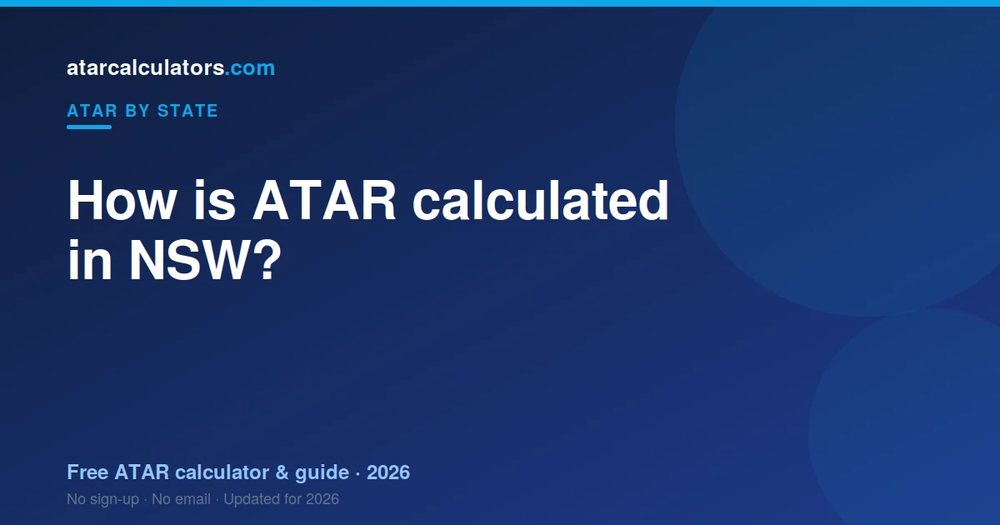
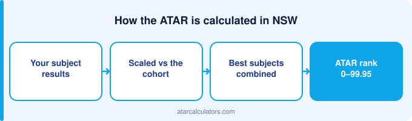

In New South Wales, your ATAR is worked out by UAC from your scaled HSC marks. Each subject is scaled, your best 10 units (including 2 units of English) are added into an aggregate, and that aggregate is ranked against your age group to give an ATAR between 0.00 and 99.95. NESA sets and marks the HSC; UAC turns those marks into your ATAR.
Key takeaways
- Your NSW ATAR is a rank from 0.00 to 99.95, not an average of your marks.
- It is built from your best 10 units of scaled HSC marks.
- Two units of English must be included.
- UAC scales your marks and works out your ATAR. NESA sets and marks the HSC.
- Each HSC mark is half school assessment, half exam.
- Your school ranking matters, because it shapes how exam marks are shared out.
- The same ATAR is used by universities across Australia, not just NSW.

A rank, not a mark
The most important thing to know is that your ATAR is a rank. An ATAR of 85 does not mean you scored 85%. It means you finished ahead of about 85% of your age group.
Because it is a rank, it lets universities compare students who took completely different subjects. That is the whole point of the ATAR.
What the HSC is
The HSC is the Higher School Certificate, the Year 12 qualification in New South Wales. It is set and marked by NESA, the NSW Education Standards Authority.
You finish the HSC with a mark in each subject. Those marks are the raw material for your ATAR, but they are not your ATAR. That comes next.
How your HSC mark is built
Each HSC mark has two halves. Half comes from your school assessments across the year. Half comes from your final HSC exam.
Your school assessment marks are moderated against your cohort’s exam performance. This is why your ranking within your school matters. A strong rank protects your assessment mark, because the group’s exam results are shared out in rank order.
How UAC scaling works
Once you have your HSC marks, UAC scales them. Scaling adjusts each subject so that the same result means the same thing across subjects.
A subject scales up when the students taking it are strong across all their subjects. It scales down when the group is broader. Your rank within the subject never changes — scaling only changes how the mark counts towards your ATAR. See which subjects scale well in best scaling subjects in NSW.
Your best 10 units form an aggregate
NSW builds your ATAR from 10 units of scaled marks. Most subjects are 2 units, so that is usually five subjects. Extension subjects are 1 unit each.
Two of those units must be English, which is compulsory. UAC takes your best 10 units, including English, and adds them into an aggregate. Your weaker units may not count at all.
A worked example
Say you take English (2 units), Maths (2 units), Biology (2 units), Business Studies (2 units) and Modern History (2 units). That is 10 units.
UAC scales each one, then adds your best 10 units into an aggregate. That aggregate is compared with every other student’s. If it sits higher than 88% of them, your ATAR is about 88.00. Your strongest subjects do most of the work.
Who does what in NSW
Two bodies are involved, and it helps to keep them straight. NESA runs the HSC: it sets the courses, the exams, and your HSC marks. UAC takes those marks, scales them, and works out your ATAR.
So NESA gives you your HSC. UAC gives you your ATAR. We cover UAC in detail in UAC explained.
How many units do you need?
You need at least 10 units to get an ATAR, including 2 units of English. Most students take 10 to 12 units, which is five or six subjects.
Taking a couple of extra units is a smart safety net. If one subject goes poorly, your best 10 units still count, and the weak one drops out.
Common mistakes
The first mistake is reading the ATAR as a percentage. It is a rank. The second is picking subjects only because they scale well, then scoring poorly in them. A strong mark in a subject you are good at beats a weak mark in a high-scaling one.
The third is ignoring your school ranking. In NSW, your rank shapes your assessment mark through moderation, so it matters as much as the exam itself.
Estimate your NSW ATAR
The clearest way to see all this is to try it. Our NSW ATAR calculator applies the latest official HSC scaling to your marks and gives you an estimated ATAR.
An estimate is not your official result, which only UAC can give. It shows you where you stand now, so you can set a realistic target for the rest of Year 12.
The two halves of your HSC mark
Your HSC mark in each subject comes from two equal halves. One half is your internal assessment, set and marked by your school across the year. The other half is your external exam, set and marked by NESA at the end.
The two are averaged, so both matter equally. A strong year of internal work can steady a shaky exam, and a strong exam can lift a patchy year. Neither half decides your mark on its own.
Why your school ranking matters
Here is the part students miss. Your internal marks are moderated against your cohort’s exam performance, in rank order. Your school’s group exam results set the range of internal marks, and your rank decides where you sit in that range.
So your position in your class matters as much as your raw internal score. Climbing even one or two places can lift your moderated mark. Every internal assessment is a chance to improve your rank, not just your score.
A fuller worked example, with units
NSW builds your ATAR from ten units of scaled marks. Most subjects are worth two units. So a typical student takes about five or six subjects to reach the ten units, including two units of English.
| Subject | Units | Counts? |
|---|---|---|
| English Advanced | 2 | Yes (English is compulsory) |
| Maths Advanced | 2 | Yes |
| Chemistry | 2 | Yes |
| Economics | 2 | Yes |
| Biology | 2 | Best 10 units, so counts if strong |
UAC scales each subject, then adds your best ten units, including your two units of English, into an aggregate. That aggregate is ranked into your ATAR.
How Extension courses count
Extension courses, like Maths Extension 1 and 2 or English Extension, are worth one unit each. They let strong students go deeper, and they tend to scale very well because their cohorts are strong.
Because your ATAR uses your best ten units, an Extension course can be a smart addition. It adds a unit that often scales highly, giving your aggregate a lift if you do well in it.
HSC bands are not your ATAR
Students often confuse HSC bands with the ATAR. They are different. A Band 6 is the top HSC band in a subject, awarded for a mark of 90 or above. It describes your performance in that one subject.
Your ATAR is a separate, statewide rank built from your scaled marks. You can get several Band 6s and still have an ATAR below what you expected, because the ATAR depends on scaling and on how everyone else did. Bands describe subjects; the ATAR ranks students.
Why you cannot calculate it exactly yourself
There is no formula you can run at home to get your exact ATAR. It depends on how every other student in NSW performs, and on the exact scaling for that year. Both are only known once all results are finalised.
This is why calculators give an estimate: they apply last year’s scaling to your marks, which is close but not the final figure. See how accurate ATAR calculators are.
What scaling does to a typical mark
It helps to see scaling in numbers. A raw HSC mark of 80 in a subject with a strong cohort might scale up to around 84. The same raw 80 in a broad-entry subject might scale down to around 76. Same raw mark, different scaled value.
This is why two students with the same HSC marks can end up with different ATARs. What matters is not just your mark, but how the subject scales and how you ranked within it.
Why ten units, and not all your subjects
NSW builds your ATAR from your best ten units, not everything you studied. Most students take a little more than ten units, so their weakest results can drop out.
This is deliberate, and it works in your favour. If one subject goes poorly, it may fall outside your best ten and barely affect your ATAR. Taking a small buffer of extra units is a sound safety net.
Your best subjects carry your ATAR
Because only your best ten units count, your strongest subjects do the heavy lifting. A high scaled mark in a subject you excel at pulls your aggregate up more than a middling mark in several others.
The lesson is to protect and push your strong subjects. An hour spent lifting a strong subject often does more for your ATAR than an hour rescuing a weak one.
How NSW compares to other states
The three-step process — scale, aggregate, rank — is national, but the inputs differ. NSW counts ten units of scaled marks, including two units of English. Victoria uses an English study plus your best three, and Queensland uses your best five scaled results.
Different inputs, same output: an ATAR from 0.00 to 99.95 that means the same across the country. See the national process for the full comparison.
Turning your estimate into a plan
Once you understand how the ATAR is built, an estimate becomes a planning tool. Enter your current marks, see your estimated rank, and compare it with the cutoff for your course. That gap is your target for the rest of the year.
Re-run the estimate after each round of assessments. As your real marks replace predictions, the number gets sharper, and you can see exactly which subjects are moving your rank the most.
What this means for choosing subjects
Put together, the process points to a simple strategy. Take an English you can do well in, since it is compulsory. Add subjects you are strong in, because your best ten units carry your ATAR. Include an Extension or high-scaling subject only if you can score well in it.
Then take a small buffer of extra units, so one weak result can drop out. Do that, and the machinery of scaling and aggregation works in your favour rather than against you.
Common questions
How many units do you need for a NSW ATAR?
You need at least 10 units, including 2 units of English. Most students take 10 to 12 units, which is five or six subjects. Your best 10 units count towards your ATAR.
Is English compulsory for the NSW ATAR?
Yes. At least 2 units of English must be included in your best 10 units. It is the only compulsory part of the NSW ATAR.
Who calculates the NSW ATAR?
UAC, the Universities Admissions Centre, calculates the NSW ATAR. NESA sets and marks the HSC, and UAC scales those marks and works out your ATAR.
How does HSC scaling work?
UAC scales each subject based on how strong the students taking it are across all their subjects. A strong cohort scales a subject up; a broader one scales it down. Your rank within the subject never changes.
What is the maximum NSW ATAR?
The highest possible ATAR is 99.95, the same across Australia. Ranks below 30.00 are usually reported as “less than 30”.
Are HSC bands the same as an ATAR?
No. A Band 6 is the top band in a single HSC subject, for a mark of 90 or above. Your ATAR is a separate statewide rank built from your scaled marks across subjects.
How much of my HSC mark is the exam?
Half. Your HSC mark in each subject is the average of your internal assessment, set by your school, and your external exam, set by NESA. Both count equally.